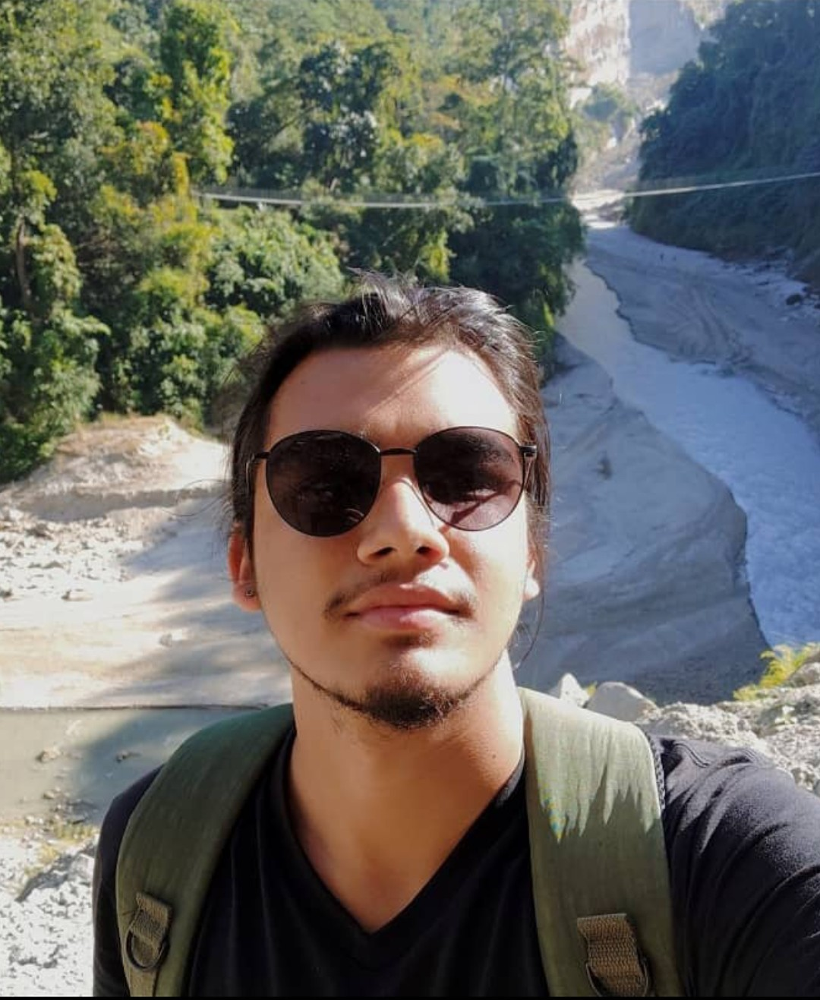

Welcome

Hello! I’m Yash Raj Bista, a passionate Tech Enthusiast based in Nepal.
About Me
I specialize in Oracle, SQL Server, and MySQL environments with a strong focus on high availability, disaster recovery, and performance tuning. I thrive on solving complex problems with smart database architecture and automation.
Experience & Certifications
Certifications
- Oracle Certified Professional (1Z0-082) – 81.9%
- Java Package Training – Broadway Infosys (Feb–May 2021)
Internships
- Web Developer – Corizo, Noida (Remote) (Feb–Apr 2023)
- Oracle DBA Intern – Octacore Solutions (Oct 2023–Feb 2024)
Oracle DBA – World Distribution Nepal (Full Time)
Feb 2024 – Present
- Clients: Nepal Telecom, Nepal Police, Himalayan Bank Ltd, DG_HUB, NITC
- Maintained RAC, Data Guard, RMAN, GoldenGate, and audit policies
- Led zero-downtime patching and DR testing efforts
Ncell Infrastructure Migration
Tech Stack: Linux, PCA, OLVM, Rackware RMM
- Migrated 1000+ VMs with minimal downtime
- Ensured validation, rollback, and best practices post-migration
Contact Me
Email: yashraj.bista@wdn.com.np
Location: Kathmandu, Nepal